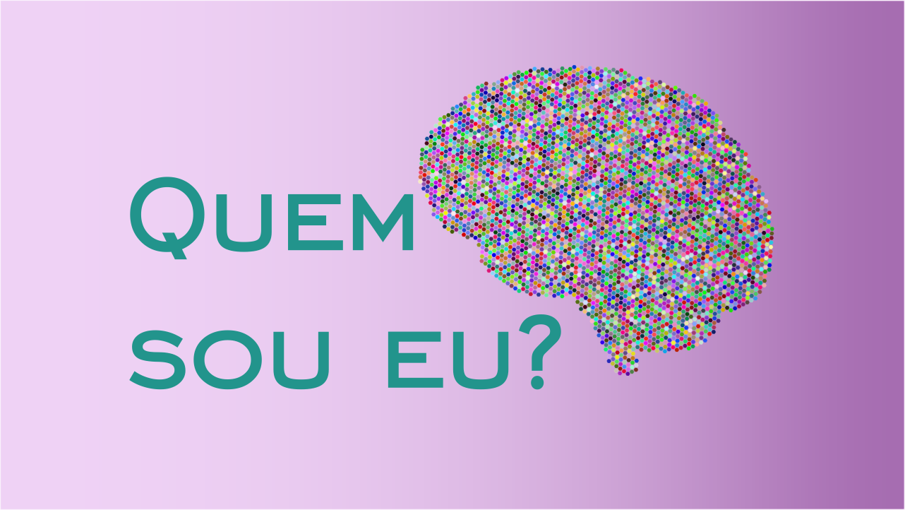

23 de Março de 2023
Jornada do Zero á Primeira Vaga

Minha jornada na programação tem sido uma emocionante aventura,
repleta de desafios e conquistas. Desde o momento em que escrevi minha
primeira linha de código, mergulhei de cabeça nesse mundo cheio de
possibilidades tecnológicas. Ao longo dos anos, adquiri conhecimento
em diversas linguagens de programação, explorei diferentes campos e
participei de projetos colaborativos. Ver minhas soluções ganharem
vida e trazerem impacto positivo é extremamente gratificante. Estou
sempre em busca de aprimoramento, participando de cursos e
conferências. Minha jornada na programação é sobre solucionar
problemas, ser criativo e estar apaixonado por aprender. Estou animado
para continuar essa jornada, explorando novas áreas e contribuindo
para o avanço tecnológico. Hoje é um dia muito especial para mim pois
estou dando um passo muito grande para minha carreira realizando este
evento NLW SPACETIME, e desenvolvendo um projeto, uma cápsula do tempo
que será muito importante para eu poder ver minha evolução daqui á
alguns anos, este com certeza é meu primeiro projeto complexo dentro
da programção.
23 de Março de 2023
Quem sou eu?

Olá! Eu sou o Caio Machado Viana. É um prazer conhecê-lo(a).
Permita-me apresentar um pouco sobre quem eu sou. Sou uma pessoa
apaixonada por tecnologia. Desde criança, sempre fui curioso e ávido
por aprender sobre o mundo tecnológico ao meu redor. Essa sede de
conhecimento está me levando a explorar diversas áreas dentro da
programação e adquirir habilidades em desenvolvimento de software.
Profissionalmente, tenho experiência em Laborátorios de Prótese
Dentaria, garçom, entregador, caixa de restaurante e auxiliar de
decoração em uma empresa de embalagens plásticas, onde pude aprimorar
minhas habilidades e contribuir para o sucesso de projetos
desafiadores. Apesar de ter tido diversas experiências como as citadas
anteriormente, em nenhuma delas eu senti que era oque eu queria para
minha vida, e foi ai que eu conheci esse universo extraordinario da
programação, aqui me encontrei, me sinto feliz e tenho certez que é
isso que eu quero para minha vida. Sou conhecido por minha
perseverança e resiliência pois sempre vou até o final de qualquer
projeto ou emprego que eu tenha participado. Além disso, sou uma
pessoa comprometida com o crescimento pessoal e profissional contínuo.
Acredito que é essencial estar sempre aberto a novas oportunidades e
desafios, buscando constantemente expandir meus horizontes e adquirir
novas habilidades. Quando não estou trabalhando, gosto de assitir
jogos de futebol com meu pai e meu irmão, jogar jogos online com meus
amigos, fazer calls com os mesmos no discord, assistir filmes e
séries, sair para comer com minha família, e curtir uma baladinha de
vez em quando. Acredito que é importante equilibrar trabalho e lazer,
permitindo-me recarregar as energias e manter a mente afiada. Estou
sempre aberto a novas conexões e parcerias, então, se você estiver
interessado em saber mais sobre meu trabalho ou se quiser trocar
ideias, não hesite em entrar em contato. Adoro conhecer pessoas novas
e explorar oportunidades colaborativas. Espero que essa breve
introdução tenha lhe dado uma ideia de quem eu sou. Fique à vontade
para entrar em contato se tiver alguma pergunta ou se precisar de
alguma informação adicional. Atenciosamente, Caio Machado Viana.
23 de Março de 2023
Meu Objetivo dentro da Programção

Meu objetivo dentro da programação é usar minha paixão pela tecnologia
e minha expertise em programação para criar soluções inovadoras e
impactantes. Acredito que a programação é uma ferramenta poderosa que
pode transformar a maneira como vivemos, trabalhamos e interagimos com
o mundo ao nosso redor. Busco constantemente desafios que me permitam
expandir meu conhecimento e habilidades técnicas. Meu objetivo é
dominar diferentes linguagens de programação, frameworks e
ferramentas, a fim de me tornar um programador versátil e capaz de
enfrentar qualquer desafio que se apresente. Também tenho como
objetivo me envolver em projetos colaborativos, onde posso trabalhar
em equipe, compartilhar conhecimentos e aprender com outros
profissionais talentosos. Acredito que a colaboração é fundamental
para impulsionar a criatividade e alcançar resultados excepcionais.
Busco projetos que possam trazer melhorias para as pessoas e colaborar
com profissionais talentosos. Além disso, pretendo estar atualizado e
compartilhar conhecimentos com a comunidade. Tenho o objetivo de mudar
minha vida por meio da programação, buscando oportunidades de trabalho
fora do Brasil e ajudando minha família. Estou entusiasmado em usar
minhas habilidades para construir um futuro promissor. Estou empolgado
com as oportunidades que a programação oferece e pronto para enfrentar
os desafios que surgirem em meu caminho. Mal posso esperar para ver
como minhas habilidades e paixão pela programação podem ajudar a
moldar um futuro tecnológico promissor.